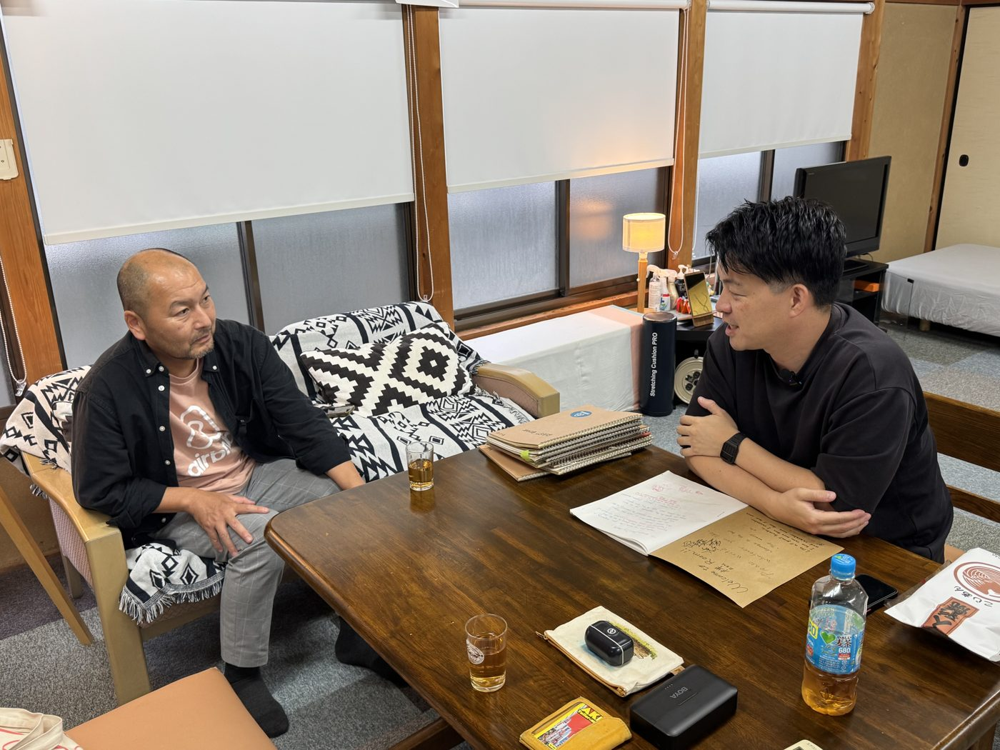
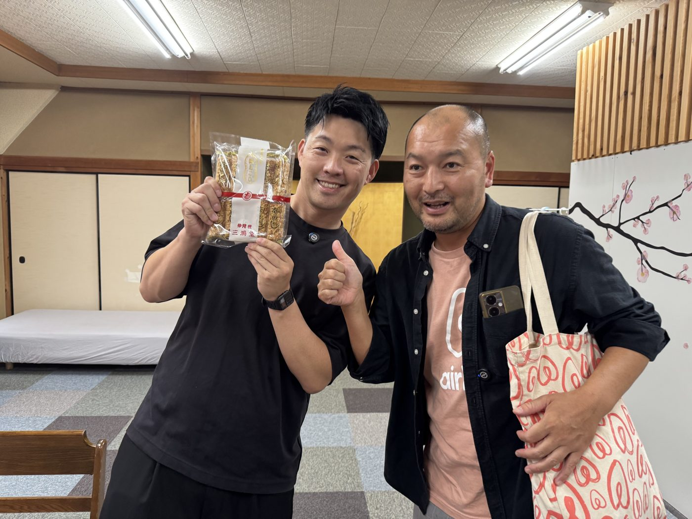
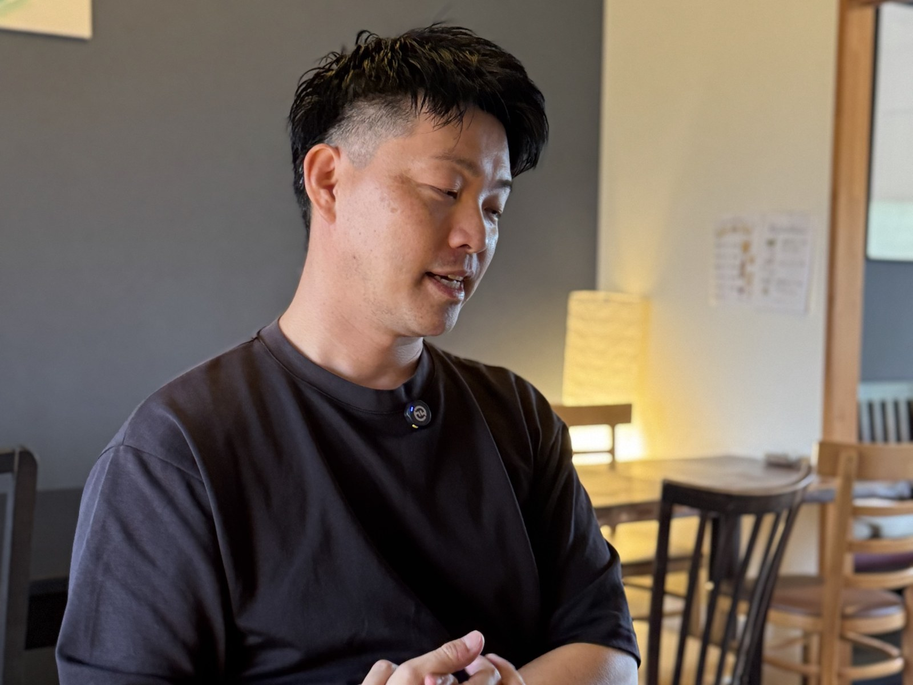
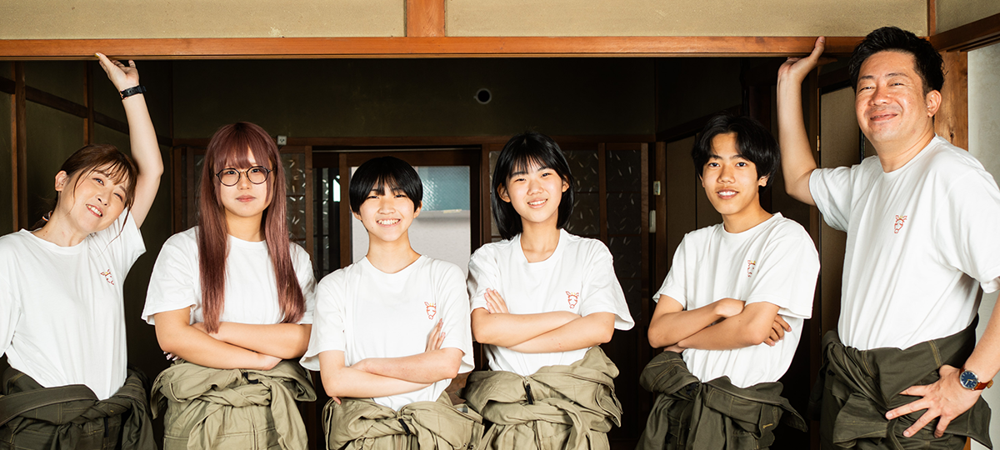

本編収録を3回に分けて編集した音源です。公開前の確認用で、番号と公開日はこれから決めます。各回の下に、同じ内容をインタビュー記事にしたものを置きました。


大阪府貝塚市の古民家に、てつろーとユウキがシンヤさんを訪ねた。二人の間には10年前のロサンゼルスの記憶がある。それが今年6月のAirbnbUniteで、偶然よみがえった。上海で受けた一晩のもてなしが今のホスティングの原点になったという話から、2015年に貝塚で民泊を始めた頃の手探りまで、シンヤさんのルーツをたどる。
和室に調度品があって、年代を感じるものも多いですね。後ろの金屏風なんて、大阪そのものじゃないですか。
東京から飛行機で来て、関西空港から電車で15分くらいでここに着くんですよね。
遠路はるばる、しかも貝塚という大阪の南部まで来ていただいてありがとうございます。改めまして、ホストのシンヤです。
3人が顔を合わせるのは、実は偶然が重なった結果だった。
今日の収録が実現したのは本当に偶然なんです。6月30日にAirbnbUniteという、Airbnbホストが700人くらい集まるイベントがあって、私とユウキさんとで民泊ガイドラジオの公開収録をしたんですよ。その後、私が登壇後にトイレに行ったら、直前まで登壇していたシンヤさんとばったり会って。
「え、何やってるんですか」って驚いて。それが10年ぶりの再会だったんです。
10年前の出会いは、ロサンゼルスで開かれた「Airbnb Open」というイベントだった。
街中のシアターとバーがAirbnbによって借り上げられて、昼間はダウンタウン中のシアターでセミナーをやって、夜はあらゆるバーで世界中から集まったホストが物件の話をする。目抜き通りを2本ぶち抜いて交通封鎖するという、今では考えられない規模のイベントでした。日本からの参加は当時の写真で20人くらいでしたね。
初日にブライアン・チェスキーさんが新しいサービスを始めると発表して、それがエクスペリエンス、いわゆる体験だったんですよね。
その場に僕らはいたんです。体験が世界で初めて公開になった瞬間を、僕らは聞いていた。その後もマルーン5やレディー・ガガのステージまで見せてもらいました。
2人が別のタイミングで出会ったのが、ブライアンさんの来日時だった。大きな発表を控えたキャラバンの最後が東京で、シンヤさんとユウキさんを含む12名ほどのホストが呼ばれ、ラウンドテーブル形式で話す機会があったという。
実際に話せたのは30分くらいでした。私は、高校生の方々に民泊を始めていただくという取り組みを紹介したり、観光以外の部分での可能性を簡単にお話ししました。ブライアンさんは非常に興味を持ってくれましたが、具体的に何かが動くというところまではいかなかったですね。
その前日には、ホストの何人かがユウキさんの秋葉原ツアーに参加していた。
メイドカフェで最高だったって、みんな超盛り上がってましたよ。
シンヤさんは高校2年でニュージーランドのウェリントンに留学し、大学は外国語大学で中国語を専攻した。
英語と中国語がしゃべれたら、スペイン語圏を除くほとんどの人とコミュニケーションが取りやすいんじゃないか。当時はそんな単純な考えで中国語にシフトしたんです。
私も同じ時期、北京で仕事をしていました。英語と中国語ができると、9割以上のお客さんとコミュニケーションが取れる。
大学卒業後、仕事で上海に出張した際の体験が、シンヤさんのホスティングのルーツになった。
ホテルがなかなか取れなくて、検索しているうちにAirbnbというものがあるらしいと知って予約したんです。泊まったのが同居型のホストさんで、到着するなりお茶を片手に交流が始まって、なんだこれはと。翌朝は看板もないような地元民しか行かない朝市に連れて行ってもらって、いい意味で衝撃を受けました。これを日本でも同じように提供できるんじゃないか、というのが僕のホスティングのルーツかなと思います。
私も大学生の時に中国を一人旅していて、上海のバスで隣になった男性に「一人旅なのか」と聞かれて、筆談で答えたら「じゃあ今から来るか」とご馳走になったことがあります。人にもてなしてもらうことがこんなに楽しいんだと知りました。政府は政府、人は人で、本当にいい人が多い。
シンヤさんが民泊を始めたのは2015年。貝塚市は大阪市内や東京とは違い、Airbnbという言葉すら知られていない土地だった。
教えてくれる人もマニュアルになる人もいなかったので、本当に手弁当で、自分で試行錯誤しながら改善を重ねてきました。1回か2回、Airbnbが主催するファンイベントに行ったくらいで、説明会もほとんどなかったです。
思い出に残るゲストを聞かれると、シンヤさんは最初の予約のエピソードを挙げた。
リスティングがまだ未完成で、段ボールが置いてあるような状態でオンラインに公開したんです。忘れもしませんけど、3時間10分後ぐらいにポンという通知音がして、予約が入っていた。写真の完成度も低いのに予約してくれたのが、オーストラリアから来た社会人1、2年目くらいの仲良し3人組でした。当時はクイック返信のテンプレもなくて、本当にみんな手探りで全部手入力していた時代です。一緒に夕食に行って、オーストラリアでは徐々に知名度が上がっていて日本でも絶対流行ると思うよ、と言われたのを覚えています。それまでは「誰も来ないよ」という感想ばかりだったので、そこで初めて、実際に来て泊まるニーズがあるんだと実感しました。
コロナを経て日本人比率も少し上がりましたが、それでも8割はインバウンドです。今までカウントした国は22カ国くらいで、ニューカレドニア、北欧のフィンランドやノルウェーもありました。一番多いのは、リスティングに中国語対応と書いていることもあって、中国本土や香港、台湾の方です。
失敗談を聞かれると、意外な答えが返ってきた。
仲介事業者はAirbnbしか使っていないので、ダブルブッキングはあまりないんです。ただ、連絡を取るのを忘れていて当日に鉢合わせになったことは何回かありました。大きな損壊やトラブルは、10年やっていて思い返す限りあまりないですね。窓ガラスの引き戸が倒れて割れたくらいのマイナーなことはありますが、悪気を持って壊されたことはないです。
実家の家業も並行して営むシンヤさんを、てつろーは気づかう。
届出は母親も一緒に入ってくれているので助けてもらっていますし、オンラインでのやり取りを密にして、なるべく先回りして必要な情報を提供するようにしています。

一ホストのはずのシンヤさんは、なぜかAirbnb本社に何度も呼ばれてきた。きっかけは2017年に発足させた大阪ホームシェアリングクラブだった。そこからホストアドバイザリーボードの発足メンバーにもなった。サンフランシスコ本社の広さから、ニューヨークとパリで規制の効き方がまったく違う話まで、一ホストが見てきた世界の民泊の裏側を聞く。
2018年6月の住宅宿泊事業法の施行前、ホストの声を届ける器がないという課題があった。
BNBジャパンの公共政策部門の方に声をかけていただいて、同じ思いを持つ大阪のホストに一人ずつ声をかけながら、2017年7月に大阪ホームシェアリングクラブという任意団体を発足させました。ホームシェアリングクラブ自体はサンフランシスコが発祥で、当時は世界中に、東京や京都にもあったんです。
法施行後、こうした団体を立ち上げてホストの声を届けた経験が「ベストプラクティス」として本社に伝わり、直接連絡が来るようになった。
確か2週間前くらいに連絡が来て、2週間後にサンフランシスコまで飛べますかという話でした。普通に自分の宿にお客さんが来る予定も入っていたので、なんとか都合をつけて行ったんです。呼ばれたのは私とドイツから1名、イギリス・ロンドンから1名の3人でした。当時の社員さんからは「ブライアンを囲んでちっちゃいところで話すだけだから」と言われていたんですが、いざ行ったら本社の1階のホールに社員が250名から300名くらい集まっていて、ステージまでできあがっていた。着いた瞬間に「うわぁ、騙された」と思いました。
オフィス不要論が唱えられる時代に、なぜAirbnbはずっと広大なオフィスを持ち続けているんでしょうね。
昔は工場だった5階建ての建物を丸ごとオフィスにしていて、正確には25万平方フィート、日本の単位でいうと23,200平方メートルくらいあります。うちの民泊が25平方メートルだから、単純計算で何倍という広さです。全てのオフィスが各地のリスティングを模した会議室になっていて、訪れた人にAirbnbの世界観を体感させる仕組みになっているんだと思いました。
東京のブランチには僕らも行っていますけど、そこでは体感できない何かが本社にはあるんでしょうね。
シンガポールや東京など他のオフィスにも行きましたが、どこに行っても共通のテーマやビジョンは感じられます。ただ、本部があるサンフランシスコに行くと、行くたびにモチベーションが上がる。今年5月にも夏のリリース発表に呼んでいただいて、食べ物のケータリングや空港のピックアップサービスといった新機能を見てきました。ブライアンさんは、一つのアプリで旅の全てを完結できる仕組みを目指しているんだと感じます。先週リリースされた「トラベルマップ」も、過去に一緒に体験や旅行をした相手と、許可を得た上でつながれる機能で、Airbnbらしいなと思いました。
コロナ禍の2020年から2021年ごろ、ホストの声を幹部やエグゼクティブに届ける「ホストアドバイザリーボード」という仕組みができた。
その発足メンバーとしてお声がけをいただいて、開始当初は16、7カ国のメンバーがいました。アジアは中国、タイ、日本という顔ぶれです。私は2年務めた後、沖縄のリエさんにバトンタッチして、今は京都のユウスケさんが現役でやっています。一つのサイトを全世界で使うので、国ごとに使いやすさは違います。各国のヒアリングをした上で幹部にフィードバックするのが一番大きな役割で、2年に1回は本社に世界中のメンバーが集まって、2、3日みんなで議論する機会もありました。ホスティングという共通言語でこれだけつながれるのかと思いましたね。
発足当時は宿泊のホストだけだったが、今では体験とサービスにもそれぞれアドバイザリーボードができている。
この前東京であった集まりでは、宿泊から来た人が60人、体験から来た人が30人、サービスから来た人が30人でした。Airbnbが宿泊だけじゃないという事業の多様化を感じます。
シンヤさんから見て、日本の民泊マーケットの特徴ってあるんですか。
当時でいくと、米国本国とヨーロッパに次ぐ3番手くらいの規模だったと思います。オーストラリアも当時は大きなマーケットでした。日本は目的地としての多様性が各国と比べても突出していて、それを受け入れる受け皿としてのホストがクオリティを高めることが、民泊の醍醐味かなと思っています。ちなみに民泊は英語でSTR、ショートタームレンタルと呼ぶんですが、日本ではあまり聞かない言い方ですよね。
各国の規制対応についても、アドバイザリーボードで頻繁に情報交換していたという。
活発にロビー活動をしている国もあれば、同じように活動していても事業環境が改善されなかった国もありました。逆に何もしなくても届出がすごくやりやすい国もあって、比較するだけで面白かったです。例えばニューヨークは民泊禁止になりましたが、それによって闇民泊が増えたと聞いています。一方でパリはほとんど規制がなくて、すごく多い。ルールを作って届出や許可を出す方が、行政が実態を把握できるという意味でも必須なんだと、今回よく分かりました。それも含めてか、Airbnbはニューヨークにまた新たにオフィスを借り上げたんですが、あそこまで門前払いされているような市にあえて構えるのは、真っ向から向き合うという意思表示なのかなと僕は読み取りました。
Airbnbの活動にとどまらない話として、シンヤさんはアメリカ国務省のプログラムにも参加していた。
2024年11月に、日米の観光元年というテーマのもと、観光業や宿泊業に携わる人材をアメリカに送って研修してもらう「IVLP」というプログラムに声をかけていただきました。インターナショナル・ビジター・リーダーシップ・プログラムの略で、80年の歴史があり、今の東京都知事の小池百合子さんや南アフリカのラマポーザ大統領も過去に参加しています。次世代リーダーのネットワーキングの場を作るという意味合いもあると聞いています。今回のテーマはルーラルツーリズム、地方部を観光で活性化するというもので、日本から8名が選ばれ、そのうちの1名が私でした。残りは愛媛県庁や新潟県燕市の職員など行政の方が半数、もう半数は北海道でファームガイドをしている方や私のような宿泊事業者でした。
このプログラムは全額アメリカ国務省が出資しているんですが、今回は初めて官民合同で、民の部分をAirbnbが担っていました。ただ、Airbnbのホストとして参加したのは私だけだったんです。1ヶ月かけて、ワシントンDCから始まり、フロリダ州、アーカンソー州、ニューメキシコ州、そして最後にAirbnb本社があるサンフランシスコまで、5都市を回って研修を受けました。

アメリカ国務省のプログラムで地方観光の現場を見てきたシンヤさんに、てつろーとユウキが「この先どうするのか」を尋ねる。話は大阪という立地の使い方から始まる。そして隣町・泉佐野で進む高校生民泊のプロジェクトへと広がっていく。貝塚の民泊ホストが、宿の外側で何を仕掛けようとしているかが見えてくる。
そんなヒントを受けちゃったら、今の民泊ホストというポジションよりも、もっと大きく観光業界に出ようと思っちゃうんじゃないですか。
キーワードになると思っているのが「広域送客」です。ベースになる都市はほぼ決まっていて、東京、大阪、京都、福岡、札幌といったところ。そこを拠点にして、さらに先の衛星都市へ送っていく。そこにリーチするきっかけが要で、ハブになれる人や団体が必要なんです。ゲストとの接点が多い私たちのような小規模宿泊事業者は、数がまとまればそのハブになれるんじゃないかと思っています。
大阪はそういう広域観光の起点になり得る場所なんですか。
大阪は基本的に、東京大阪間も含めてどちらかから入ってどちらかから出る、入り口出口の役割です。関空もありますし。ただ案外、皆さん大阪だけで疲れてしまう。旅の習熟度にもよると思うんですが、1回目、2回目、3回目で提案するコンテンツは変えていくべきなんです。
パリやニューヨークがなぜあれだけリピーターが多いかというと、いつ来てもフレッシュな体験ができるからです。最初の訪問は道頓堀、大阪城、なんば、梅田でいいと思うんですが、リピーターには「今回の大阪は違ったよね」と思わせられるかどうかで、そこで大事になるのが広域送客です。デイトリップにうってつけなのが衛星都市で、そこから第3、第4、第5に注目される都市が魅力的に映ってくる。中国や台湾、韓国も含めて何カ国か回る旅行者がいる中で、日本にどれだけ長く滞在してもらえるかが結局は国益になると思うんです。
あるゲストが使っていた言葉から、シンヤさんは「Hidden Gems」という考え方を大事にしているという。
直訳すると隠された宝石ですが、みんな行っているかもしれないけれど、その人は知らなかった場所、そのホストに会わなければたどり着けなかった場所です。それが価値を持つのが3回目、4回目の訪問だと思うんです。今日行った「春食堂」さんも、地元の人が案内しなければただの民家に見える。そういう偶然の出会い、セレンディピティを、私自身も海外に行くときはベンチに座っているおばあちゃんに話しかけてでも探しに行きます。
うちのお客さんを1日ガイドしたとき、一番喜ばれたのは思いつきで連れて行った葛飾北斎美術館でした。
思いもよらないところにスポットがあって、それを意図的に発生させやすいのが私たち宿泊事業者だと思うんです。私に会ったから行けた場所、私のところに泊まったから聞けた情報。それ自体が価値になる。
僕もアキバでガイドをしていて、オタクのガイドとアニメの話で英語で盛り上がっただけで、向こうがすごく喜んでくれることがあります。情報を一方的に伝えるだけじゃ、聞いているほうはつまらないんですよね。
通訳案内士の試験も持っているんですが、一方的に喋るための知識を積み上げることが資格の条件みたいになりがちです。ただ、相手が何を欲しいのか汲み取って、意外な発見をさせてあげる。1から10まで決められたプランよりも、余白を残しながら偶然を生み出せる提案のほうが魅力的だと個人的には思っています。
話題は、シンヤさんが新しく取り組んでいる高校生民泊のプロジェクトへ移る。
民泊は教育との親和性が高いんじゃないかと、前々から考えていました。ゲストの準備から清掃、多言語対応、プライシングまで業務が多岐にわたるので、学生が実際の業務を体系的に学べる教材にならないかなと。隣の泉佐野市にある「キリン子ども応援団」というNPO法人の代表の方から声をかけていただいて、そちらでは子ども食堂も運営しているんですが、高校生の方々が民泊をスクラッチで立ち上げるプロジェクトが始まっています。許認可や物件整備は大人がヘルプしますが、運営やゲストとのやり取りは高校生自身がします。
私はそちらのアドバイザーとして、完全にボランティアで協力しています。すでにAirbnbにリスティングされ、何件か予約も入って実績もあって進んでいる状況です。プライシングも最初は失敗しながら、経費や利益を積み上げて決めていく。それが市場価格やゲストのニーズに合うかは別の問題ですが、実際に五つ星もかなり取れていますし、コンセプトに感動したというレビューもあります。採算はまだ難しいところもありますが、この前例が1つできれば日本中に広げられると思っています。
日本人のパスポート保有率は17%で、20年前の半分なんです。たった20年で半分になった国は他にないと思う。円安という理由もあるかもしれないけど、昔はもっと円が安かったわけで、日本人は超内向きになっている。だからこそ、こういう取り組みが必要だと思うんです。もう一つは、僕もシンヤさんもユウキさんも、サラリーマンから個人事業主になった口じゃないですか。脱サラして失敗する人は9割いると言われています。プライシングも集客も自分の頭で考えたことがない人が多いから失敗する。だから社会に出る前に、こういう経験を積むことがすごく大事だと思うんです。
NPOの代表の方も「生きていく力をつける」ということでやっていると話していて、僕もすごく共感できます。お金が全てではないけれど、稼いで生活していく力も必要ですから。ぜひ別の日にでも、一度取材していただければと思います。
高校生民泊の意義は、国際交流と経営教育の両面にあるとシンヤさんは考えている。海外に出て初めて分かることも多いという話に、てつろーとユウキが自分たちの経験を重ねた。
選択的夫婦別姓も、今の日本だとどちらかの姓にならないと家族が壊れてしまうという話になりがちですが、世界の人と会うと、ほとんどの国が夫婦別姓なのに家族は壊れていない。これは海外の人と会わないと分からないことです。ライドシェアも同じで、日本はEVもほとんど走っていないしウーバーの一般車もない。それが普通じゃないということは、日本の外に出ないと分からない。
好き嫌いはあっていいので、若いうちに一度行ってみる。食わず嫌いはよくない。逆に、イチローも「海外に出ることで日本が好きになる」と言っていました。100年以上続く会社や、1200年前に建てられた法隆寺が今も残っているような国は他にないんです。国民一人ひとりのマナーやモラルも、海外に行って初めてすごさが分かる。
収録の最後に、シンヤさんの今後の目標を聞いた。
一個人ができることは少ないですが、大阪ホームシェアリングクラブでの活動もそうですし、皆さんで情報や課題を共有しながら、自分たちが宿泊事業を通じて社会にどんな価値を提供できるかを突き詰めていきたいです。海外とのつながりが自分のベースにあるので、日本の良さを発信していきたい。今回のIVLPで特に感じたんですが、私たち自身が草の根の外交官なんだという意識で、アメリカ各地を回っていました。地方に行くと日本のことを全然知らない方もいて、日本の魅力を伝えてまた来てもらう。それが国の観光活性化にも貢献できたらと思っています。
熱い人ですね、言語化能力も高くて、リーダーの器ですよ。
一人でできることは知れていますが、複数でムーブメントを起こすことはやってきたなと思います。ぜひ今後もお付き合いさせていただきたいです。